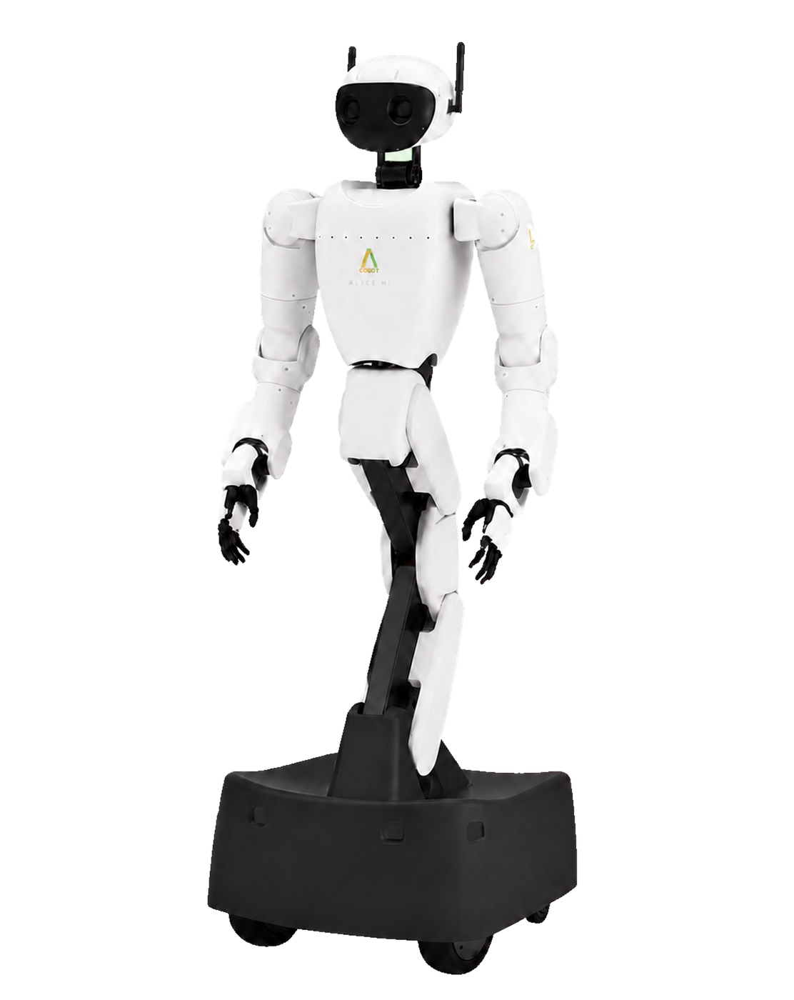
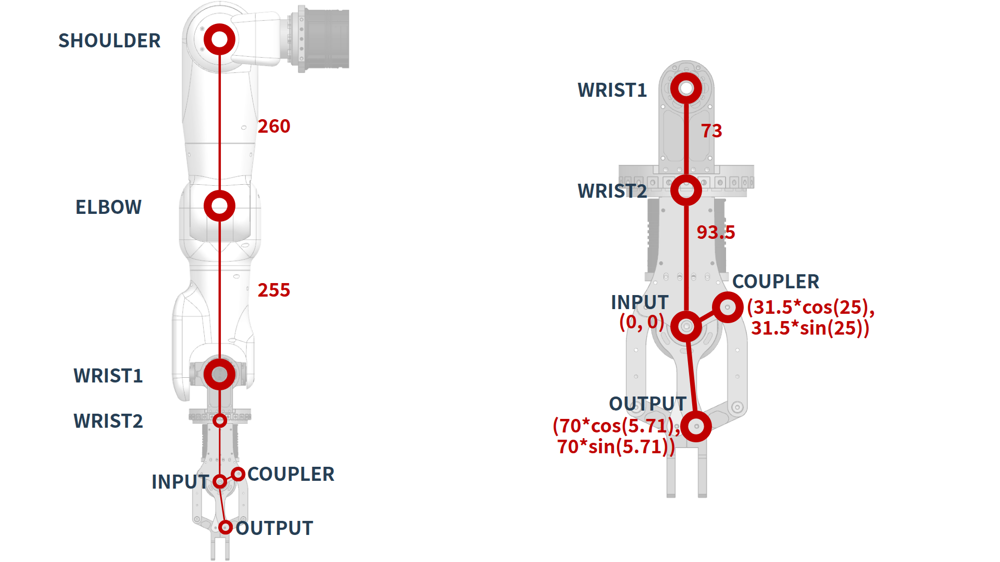
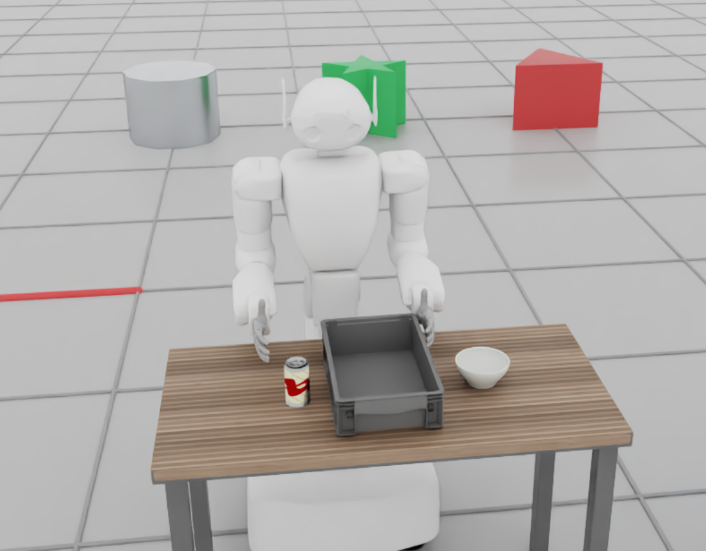

01 · 의미 일반화
처음 보는 물체와 표현
로봇 데이터에 없던 물체 이름과 관계도 웹에서 배운 지식으로 해석한다.
RT-2 · ‘테이블에서 떨어지려는 가방을 집어’, ‘콜라 캔을 테일러 스위프트 사진 옆으로’
LECTURE 04
자연어 명령을 행동으로 변환하는 모델

QUESTION
CONCEPT
인식과 해석에서 행동 출력까지 하나의 흐름
CONCEPT · POLICY
VLA는 매 순간의 관측과 명령을 받아 다음 행동을 고르는 Policy(행동을 선택하는 규칙)이다.
카메라 영상과 관절 각도 같은 로봇 상태다. 무엇이 보이고 로봇이 어떤 자세인지를 담는다.
작업을 설명하는 문장이다. 한 Episode(작업 한 번을 시작해서 끝낼 때까지) 동안 보통 바뀌지 않는다.
관절 목표각이나 손끝 이동량이다. 모터 전류는 직접 정하지 않고, 강의 ②의 제어기가 이 값을 목표로 따라간다.
Policy π(aₜ | oₜ, l): 관측과 명령이 주어졌을 때의 행동 분포. VLA는 신경망(데이터로 계산법을 배우는 모델)으로 이 함수를 학습한다.
Policy: 관측과 명령을 다음 행동으로 바꾸는 함수
CONCEPT
WHY VLA
인터넷 규모의 Pretraining(미리 넓게 배우는 학습)으로 얻은 시각·언어 지식을 로봇 행동에 연결한다.
01 · 의미 일반화
로봇 데이터에 없던 물체 이름과 관계도 웹에서 배운 지식으로 해석한다.
RT-2 · ‘테이블에서 떨어지려는 가방을 집어’, ‘콜라 캔을 테일러 스위프트 사진 옆으로’
02 · 다중 작업
작업마다 프로그램을 새로 짜지 않고 명령 문장만 바꿔 다른 작업을 수행한다.
RT-1 · 하나의 Policy로 700개 이상의 명령 수행
03 · 자연어 인터페이스
목표를 좌표나 코드 대신 문장으로 준다. 계획을 세우는 상위 모델과도 문장으로 연결된다.
Gemini Robotics ER 2 · 계획을 세워 하위 VLA에 실행을 맡김
04 · 데이터 공유
다른 로봇의 데이터까지 함께 학습하면 각 로봇의 성능이 오른다는 결과가 보고됐다.
Open X-Embodiment · 로봇 22종, 21개 기관의 데이터
웹에서 배운 의미 지식과 로봇 데이터에서 배운 동작의 결합
COMPARE
COMPARE
CONCEPT · BEHAVIOR CLONING
시연을 따라 하는 Policy는 작은 실수 뒤의 상황을 배운 적이 없다.
시연에서 얻은 관측–행동 쌍을 정답으로 삼아 지도학습(정답이 있는 예제로 배우는 학습)한다. VLA 학습의 기본 방식이다.
조금 벗어난 상태는 학습 데이터에 없어서 다음 행동도 틀리기 쉽다. 강의 ③의 Drift처럼 오차가 점점 쌓인다.
다양한 시작 조건, 실수 뒤 복구하는 시연, 사람이 개입한 기록, 행동 묶음 예측을 사용한다.
시연에 없는 상태에서 커지는 오차, 누적 오차
QUESTION
CONCEPT · TOKEN
영상·문장·로봇 상태를 한 줄의 Token으로
GUIDE · TOKEN
| Token | 모델이 한 칸씩 읽는 입력 조각이다. 문장·영상·로봇 상태가 모두 Token이 되어 한 줄로 이어진다. |
|---|---|
| Vector | 순서가 정해진 숫자 목록이다. Token 하나는 Vector 하나가 되며, PaliGemma에서는 숫자 2048개다. |
| Tokenizer | 문장을 사전에 있는 조각으로 자르고 번호를 붙인다. PaliGemma는 ‘빨간 컵을 집어’를 띄어쓰기를 포함해 7조각으로 자른다. |
| Embedding | 조각 번호를 Vector로 바꾸는 표다. 번호마다 숫자 목록이 있고, 그 값은 학습으로 정해진다. |
| Vision Encoder | 영상을 작은 정사각형 조각으로 나눠 조각마다 Vector를 만드는 신경망이다. 224×224 영상은 조각 256개다. |
| Transformer | Token끼리 서로 얼마나 참고할지 계산해 정보를 섞는 신경망이다. 이 계산 층을 여러 겹 쌓는다. |
Token은 원래 문장 조각을 부르던 말이다. 영상·상태도 같은 줄에서 읽으므로 Token이라 부른다. 문장은 Tokenizer로 조각·번호를 만들고, 영상·상태는 Vision Encoder와 선형 변환으로 Vector를 만든다.
CONCEPT · LINEAR PROJECTION
길이가 다른 숫자 목록을 모델이 쓰는 길이로 바꾸는 가장 단순한 계산이다.
0.4×0.5 + 0.1×(−0.2) + 0.3×1.0 = 0.48
출력마다 가중치를 입력에 곱해 모두 더한다. 같은 점수에 대학마다 다른 비율을 곱해 환산 점수를 내는 계산과 같다.
π0·SmolVLA는 관절 상태를 선형 변환으로 Token 하나로 만든다. PaliGemma는 Vision Encoder의 숫자 1152개를 2048개로 맞춘다.
가중치는 사람이 정하지 않고 학습으로 정해진다. 관절값 8개를 숫자 1024개로 바꾸면 곱할 가중치만 8,192개다.
곱셈과 덧셈만 쓰기 때문에 선형이라 부른다. 신경망은 선형 변환 사이사이에 곡선을 만드는 계산을 끼워 복잡한 관계를 배운다.
곱셈과 덧셈으로 숫자 목록의 길이를 맞추는 변환
ARCHITECTURE · BACKBONE
VLM(영상과 문장을 함께 읽는 모델)은 인터넷의 영상–문장 쌍으로 학습한다. VLA는 이를 Backbone(모델의 몸통)으로 가져오고, 끝에 Action Head(Vector를 행동 숫자로 바꾸는 부분)를 붙인다.
| VLA | VLM Backbone | Action Head |
|---|---|---|
| OpenVLA2024 | Llama 2 7BVision Encoder DINOv2 · SigLIP | 행동 Token차원마다 256구간 |
| π02024 | PaliGemma 3B | Action Expert약 3억 |
| GR00T N12025 | Eagle-2 VLM13.4억 Parameter | Diffusion Transformer모델 전체 22억 |
| SmolVLA2025 | SmolVLM-2언어 모델 앞 16개 층 | Action Expert약 1억 · 전체 4.5억 |
논문 공개 값이다. 모델 크기는 Parameter(학습된 숫자) 개수로 나타내며, 7B는 70억 개다. Action Expert·DiT는 다음 장에서 다룬다.
Pretrained VLM의 지식 위에 Action Head를 더한 모델, VLA
ARCHITECTURE · ACTION MODULE
둘 다 VLM이 읽은 영상·문장 정보를 참고해 행동 묶음을 만드는, 행동 전용의 작은 Transformer다.
행동 묶음 50개 · 다듬기 10번
π0가 붙인 이름으로, 한 Transformer 안에서 상태·행동 Token만 맡는 작은 가중치 묶음이다. 영상·문장 Token은 큰 VLM 가중치가 계산하고, Action Expert는 층마다 그쪽을 참고한다. 이름은 입력에 따라 담당 모듈을 나누는 MoE(Mixture of Experts)에서 왔다.
행동 묶음 · 다듬기 4번
DiT(Diffusion Transformer)는 무작위 값을 다듬는 과정을 Transformer로 계산하는 구조로, 2022년 이미지 생성용으로 나왔다. GR00T N1에서는 VLM과 따로 둔 DiT가 VLM Token을 참고해 행동을 만들며, Flow Matching으로 학습한다. 입력의 Noise 섞인 행동은 처음엔 무작위 값이고, 다듬을 때마다 행동에 가까워진다.
따로 두는 이유 · π0는 영상·문장 쪽 계산 결과를 저장해 두고 Action Expert만 10번 다시 계산한다. RTX 4090에서 전체 73 ms 중 행동 다듬기 10번은 27 ms다. 로봇 Token에 별도 가중치를 쓰자 성능도 올랐다고 보고했다.
Noise(데이터에 섞는 무작위 값) · 학습 때는 시연 행동에 Noise를 섞어 놓고 원래 행동 쪽으로 돌아가는 방향을 맞히게 한다. 실행 때는 무작위 값에서 시작해 π0는 10번, GR00T N1은 4번 다듬는다. Diffusion(‘확산’) 모델은 섞은 Noise를, Flow Matching은 행동 쪽 방향을 맞힌다. 숫자 예시는 뒤 장에서 따라가 본다.
상황을 읽는 VLM과 행동을 만드는 작은 Transformer의 분업
ARCHITECTURE · ACTION HEAD
Action Head는 데이터 수집 때 사람이 로봇 제어기에 보내던 목표를 대신 만든다. 목표를 따라가는 제어기는 그대로다.
원격 조작에서는 리더 팔(사람이 손으로 움직이는 같은 모양의 조종용 팔)의 관절각이 로봇 제어기의 목표가 된다. 이 목표가 행동으로, 같은 시각의 영상·관절 상태가 관측으로 저장된다.
로봇 없이 저장된 데이터로 학습한다. 같은 관측·명령에서 Action Head가 낸 행동과 기록된 행동의 차이를 줄이도록 가중치를 고친다. Backbone은 함께 고치기도 하고(OpenVLA) 고정하기도 한다(SmolVLA).
사람 자리에 VLA가 들어가 같은 형식의 목표를 같은 제어기로 보낸다. 그래서 행동의 의미·단위·주기가 수집 때와 같아야 한다.
Action Head 끝에도 선형 변환이 있다. π0는 폭 1024의 Vector를 행동 숫자 개수로 줄여 내보낸다. OpenVLA는 따로 붙이지 않고 언어 모델이 단어를 고르듯 구간 번호를 고른다.
수집 때 사람이 보내던 목표를 대신 만드는 Action Head
ARCHITECTURE · ACTION SPACE
Action Space(행동값의 형식과 범위)와 실행 주기를 정해야 학습 데이터와 제어기가 맞물린다.
관절 목표각은 제어기에 바로 들어간다. 손끝 변화량은 IK(역기구학: 손끝 목표로 관절각을 거꾸로 푸는 계산)를 거쳐 관절각으로 바꿔야 한다. 관절도 절대 각도 대신 현재 각도와의 차이로 내보내기도 한다.
차원마다 단위와 범위가 다르다. 학습 데이터의 평균·표준편차나 Percentile(분포에서의 상대적 위치)로 비슷한 범위에 맞춘다. 실행 때는 같은 통계로 출력을 원래 단위로 되돌린다.
데이터를 기록한 주기와 실행 주기를 같게 둔다. 다르면 같은 행동이 다른 속도로 실행된다.
행동의 의미·단위·주기를 데이터와 제어기에서 동일하게
ARCHITECTURE · ACTION HEAD
같은 VLM Backbone을 써도 행동을 내보내는 방식에 따라 속도·정밀도·학습 목표가 달라진다.
A · DISCRETE TOKEN
행동값을 구간 번호로 바꿔 단어처럼 하나씩 생성한다. 언어 모델의 구조와 학습 방법을 그대로 쓴다.
RT-2 · OpenVLA · π0-FAST
B · DIFFUSION · FLOW
학습 때는 시연 행동에 Noise를 섞고 원래 행동 쪽 방향이나 섞은 Noise를 맞힌다. 실행 때는 Noise에서 시작해 행동 묶음을 여러 번 다듬는다. 연속값과 정답이 여럿인 행동을 다룬다.
Diffusion Policy · Octo · π0 · GR00T
C · REGRESSION
연속값을 한 번의 계산으로 바로 출력한다. 빠르지만 정답이 여럿이면 평균에 가까운 값을 낼 수 있다.
OpenVLA-OFT · L1 Regression
행동 출력 방식에 따라 달라지는 속도·정밀도·학습 목표
ACTION TOKEN · INTERACTIVE
연속값을 같은 폭의 구간으로 나누고, 구간 번호를 Token으로 쓴다.
교육용 예시: 한 관절 목표각의 범위 −90°~+90°
학습 데이터에서 행동의 범위를 구한다. OpenVLA는 차원마다 양 끝 1%를 뺀 범위(1~99 Percentile)를 256구간으로 나눈다.
k = ⌊(a − amin) ÷ 구간 폭⌋이 Token이다. 7차원 행동이면 한 시점에 Token 7개를 하나씩 생성한다.
Token을 구간 중앙값으로 되돌린다. 오차는 구간 폭의 절반 이하다. FAST는 행동 묶음을 주파수 성분으로 압축해 Token 수를 줄인다.
구간 수가 정하는 행동의 해상도와 Token 수
CONCEPT · MULTI-MODAL DISTRIBUTION
Multimodal Distribution(올바른 행동이 여러 갈래인 분포)에서는 평균을 내는 학습이 둘 다 아닌 행동을 만든다.
여기서 Multimodal은 입력 종류(영상·문장)가 아니라 정답이 여러 갈래라는 뜻이다. 왼쪽·오른쪽 우회가 모두 올바른 시연이다.
오차 제곱을 줄이는 Regression은 두 경로의 중간을 출력한다. 그 중간이 장애물이다.
Diffusion·Flow Matching은 행동의 분포를 배워 한쪽 경로를 뽑고 끝까지 따라간다.
개념도. 실제 성능은 작업과 데이터에 따라 다르다. Regression을 쓰는 OpenVLA-OFT도 높은 성공률을 보고했다.
정답이 여럿인 행동에 맞는 분포 학습, 생성 모델
ACTION HEAD · NOISE
Diffusion·Flow Matching은 정답 행동에 일부러 Noise를 섞어 놓고, 거기서 정답 쪽으로 돌아가는 방향을 맞히는 연습을 한다. 실행 때는 Noise에서 출발해 배운 방향으로 조금씩 옮겨 행동을 만든다.
시연 행동 a와 무작위 Noise ε를 비율 τ(0이면 Noise, 1이면 정답)로 섞은 점 x를 만들고, a − ε를 정답 방향으로 맞히게 한다. 예시는 정답 1.6에 예측 1.2라 손실이 0.16이다. 학습마다 시연·Noise·τ를 새로 뽑아 한 번만 계산한다.
실행 때는 정답이 없으니 새로 뽑은 Noise에서 출발해 예측한 방향으로 0.1씩 10번 옮긴다(π0). 앞 장의 「다듬기 10번」이 이 반복이다.
출발점에서 예측하는 방향은 정답들의 평균을 가리킨다. 한 번에 끝까지 가면 제곱 오차 Regression처럼 평균에 떨어진다. 조금씩 옮기며 방향을 다시 계산하면 출발한 Noise에 따라 한쪽 정답으로 간다.
Diffusion 모델은 방향 대신 섞은 Noise 자체를 맞힌다. 섞어서 배우고 여러 번 다듬는 흐름은 같다.
정답에 Noise를 섞어 돌아오는 방향을 배우고, 실행 때는 여러 번 나눠 이동
ACTION HEAD · FLOW MATCHING
Flow Matching(무작위 값에서 정답으로 가는 방향을 배우는 방법)은 π0·GR00T·SmolVLA의 연속 행동 생성 방식이다.
시연 행동 a와 Noise ε를 섞은 점에서, 행동 쪽으로 향하는 방향을 맞히도록 학습한다.
Noise에서 출발해 예측한 방향으로 조금씩 이동한다. π0는 10번 반복한다.
둘 다 Noise를 줄여 가며 만든다. Flow Matching은 Noise와 행동을 잇는 직선 경로를 학습 목표로 삼는다.
Noise에서 행동 묶음까지, 예측한 방향을 따른 반복 이동
ACTION HEAD · CHUNKING
Action Chunking(행동 묶음 예측)은 앞으로 할 행동 H개를 한 번에 만들고, 앞부분만 실행한 뒤 새 관측으로 다시 예측한다.
01 · CHUNK
다음 H개 행동을 한 번에 출력한다. π0는 H = 50으로, 50 Hz 로봇에서 1초 분량이다.
02 · EXECUTION
앞부분만 실행하고 Inference(모델의 결과 계산)를 다시 한다. π0는 50 Hz 로봇에서 0.5초마다 반복한다.
03 · EFFECT
판단 횟수가 줄어 누적 오차가 줄고 움직임이 부드럽다. ACT(Action Chunking with Transformers)가 널리 알렸다.
행동 묶음 예측, 앞부분 실행, 새 관측으로 다시 예측
COMPARE · ACTION HEAD
학습 목표, 장점, 주의할 점과 대표 수치
| 방식 | 학습 목표 | 장점 | 주의할 점 | 대표 수치 |
|---|---|---|---|---|
| Discrete Token | 다음 Token 분류Cross Entropy(정답 번호의 확률 높이기) | 언어 모델 구조와 학습을 그대로 사용 | Token을 하나씩 생성해 느림구간 폭이 해상도 한계 | OpenVLARTX 4090에서 약 6 Hz |
| Flow Matching · Diffusion | 이동 방향 · Noise 예측제곱 오차(차이의 제곱) | 연속값, 여러 정답 분포, 행동 묶음 | 여러 단계의 반복 계산 | π010단계 · 최대 50 Hz 제어 |
| Regression | 정답과의 거리L1 오차(차이의 절댓값) | 한 번에 출력해 빠름 | 정답이 여럿이면 평균에 가까워짐 | OpenVLA-OFT같은 시간에 만드는 행동 26배 |
섞어 쓰기도 한다. π0.5는 Pretraining에 FAST Discrete Token을, Post-training(기본 학습 뒤의 추가 개선)에 Flow Matching Action Expert를 쓴다.
작업의 정밀도·속도 요구에 맞춘 행동 출력 방식 선택
ARCHITECTURE · DUAL SYSTEM
Dual System(느린 판단·빠른 실행)은 큰 VLM과 작은 행동 모델의 분업이다.
| 모델 | System 2 | System 1 |
|---|---|---|
| HelixFigure · 2025.2 | VLM 70억7~9 Hz | Policy 8천만 · 200 Hz상체 35자유도 |
| GR00T N1NVIDIA · 2025.3 | Eagle-2 VLM10 Hz | Diffusion Transformer120 Hz |
| Gemini Robotics 2DeepMind · 2026.7 | ER 2계획 · 진행 판단 | 하위 VLA동작 실행 |
강의 ②처럼 두 루프의 제어 주기가 다르다. System 2는 Latent Representation(상황을 요약한 모델 내부 숫자 목록)으로 System 1에 정보를 넘긴다.
느린 상위 판단과 빠른 하위 제어의 분리
QUESTION
CONCEPT
한 Episode에 시계열로 기록되는 관측과 행동
BUILD
BUILD
관절 상태·행동과 영상은 같은 시각에 맞춰야 한다.
BUILD
DATA · FRAME
Episode는 제어 주기마다 남긴 기록의 연속이다. 한 시점의 기록에는 관측·명령과 그 순간 로봇에 보낸 행동이 함께 들어간다.
| 항목 | 저장하는 값 | 예 · LeRobot 형식 |
|---|---|---|
| 시각 | 몇 번째 기록인지와 시각 | frame_index 62 · timestamp 1.24 s |
| 영상 | 같은 시각의 카메라 이미지 | observation.images.* |
| 관절 상태 | 그 시각에 측정한 관절각과 그리퍼 | observation.state · 숫자 8개 |
| 행동 | 그 시각에 제어기로 보낸 목표 | action · 숫자 8개 |
| 명령 | 작업 문장 | task · ‘빨간 큐브를 집어’ |
관절 상태는 로봇이 지금 있는 곳, 행동은 가라고 보낸 곳이다. 원격 조작에서는 리더 팔의 관절각이 행동, 따라 움직인 로봇 팔의 관절각이 상태가 된다. 둘의 차이만큼 제어기가 힘을 낸다.
한 시점의 영상·관절 상태·명령을 입력으로, 그 시점부터 H개의 행동을 정답으로 묶는다. SmolVLA는 H = 50이다.
관절 순서와 단위(rad 등)를 수집·학습·실행에서 같게 둔다. 시뮬레이션과 실물 데이터를 섞을 때도 같다.
관측과 그 순간 보낸 행동을 짝지어 저장한 기록
DATA · COLLECTION
같은 작업이라도 수집 방법에 따라 비용, 품질, 실제 로봇과의 일치 정도가 다르다.
01 · TELEOPERATION
사람이 리더 팔·VR·조이스틱으로 로봇을 직접 움직인다. 리더 팔의 관절각이 로봇의 목표가 되고, 그 목표가 그대로 행동으로 기록돼 가장 정확하다.
ALOHA · GELLO 같은 Leader–Follower 팔
02 · SIMULATION
가상 환경에서 스크립트·Planner·원격 조작으로 모은다. 많이 모으기 쉽지만 실물과 차이가 있다.
이번 학기 · 시뮬레이션 데이터로 먼저 학습
03 · HUMAN VIDEO
사람이 작업하는 영상은 양이 많지만 로봇의 행동 값이 없어 보조 학습에 쓴다.
GR00T N1 · 웹·사람 영상, 합성 데이터, 실물 로봇 데이터를 함께 사용
04 · AUTONOMOUS
Policy가 직접 실행한 결과와 사람이 개입해 바로잡은 기록을 다시 학습에 쓴다.
π*0.6 · 시연 + 자율 실행 + 사람의 개입
수집 방법에 따른 비용·품질·로봇 일치도의 차이
CONCEPT
실패 사례와 환경 다양성을 포함한 학습 데이터
TRAINING · PRETRAIN · FINE-TUNE
처음부터 학습하지 않는다. 이미 학습된 모델에 우리 로봇의 시연을 더해 맞춘다.
LORA
LoRA(Low-Rank Adaptation)는 원래 가중치를 고정하고 작은 행렬만 덧붙여 학습해 메모리를 줄인다. OpenVLA는 이 방식으로 소비자용 GPU에서도 Fine-tuning할 수 있다고 보고했다.
MEMORY
π0 계열의 단일 GPU 안내값은 Inference 8 GB, LoRA 22.5 GB, 전체 Fine-tuning 70 GB 이상이다. 팀 서버 사양과 먼저 비교한다.
웹 지식, 로봇 일반 동작, 우리 작업 적응의 3단계
CONCEPT
QUESTION
INFERENCE · PIPELINE
VLA는 관절 목표까지만 만든다. 목표를 모터 전류로 바꾸는 일은 로봇 쪽 프로그램과 강의 ②의 제어기가 맡는다.
Action Head의 출력은 학습 때처럼 정규화된 숫자다. 저장해 둔 통계로 rad 같은 원래 단위로 되돌린다. 관절 변화량으로 학습했다면 현재 관절각을 더해 목표각을 만든다.
로봇 프로그램이 Chunk를 받아 제어 주기마다 하나씩 보낸다. openpi(π0 공개 코드)의 ALOHA 예제는 50 Hz로 25개를 실행한 뒤 새 Chunk를 요청한다. 현재 자세에서 너무 먼 목표는 잘라낸다.
제어기가 목표와 현재 각도의 차이로 토크를 정하고 드라이버가 전류를 맞춘다. ALOHA는 모터 안의 PID가 행동 주기보다 빠르게 목표를 따라간다.
모델을 팀 서버 같은 GPU 컴퓨터에서 돌리면 로봇 프로그램이 네트워크로 관측을 보내고 Chunk를 받는다. 이 통신 시간도 Inference 지연에 더해진다.
목표를 만드는 모델, 목표를 힘으로 바꾸는 제어기
REAL-TIME · INTERACTIVE
Inference에 걸리는 시간 동안에도 로봇은 다음 행동을 실행하고 있어야 한다.
교육용 예시: 50 Hz 제어(20 ms), Chunk 길이 H = 50 · 남색 실행, 주황 정지, 보라 Inference
Chunk를 실행한 뒤 멈추고 다음 Inference를 기다린다. 지연만큼 로봇이 정지한다.
실행하는 동안 다음 Chunk를 미리 계산한다. SmolVLA는 이 방식으로 작업 시간이 13.75초에서 9.7초로 줄었다고 보고했다.
새 Chunk에서 이미 지나간 d개는 버린다. RTC(Real-Time Chunking)는 실행이 확정된 행동을 고정하고 나머지를 이어서 생성해 경계의 끊김을 줄인다.
Inference 지연을 감추는 비동기 실행과 Chunk 경계의 연결
CONCEPT
SIM-TO-REAL
| Domain Randomization | 조명·색·마찰·질량·카메라 위치를 학습 중 무작위로 바꿔 특정 값에 맞춰지지 않게 한다. |
|---|---|
| 시뮬·실물 함께 학습 | 많은 시뮬레이션 데이터와 적은 실물 데이터를 섞어서 학습한다. (Co-training) |
| 실물 Fine-tuning | 시뮬레이션에서 학습한 모델을 실물 시연으로 다시 학습한다. 이번 학기의 진행 순서다. |
| 관측·행동 일치 | 카메라 위치·해상도, 제어 주기, 행동 단위를 시뮬레이션과 실물에서 같게 맞춘다. |
EVALUATION
같은 80%라도 시도 횟수가 적으면 실제 성공률이 있을 수 있는 범위가 넓다.
시작 자세·물체 배치·명령 문장을 미리 정하고 모든 모델을 같은 조건으로 평가한다.
학습에 있던 조건과, 처음 보는 물체·위치·조명·문장을 나눠서 기록한다.
성공률과 시도 횟수, 성공한 시도의 완료 시간, 실패 유형을 함께 남긴다.
공개 Benchmark(같은 기준의 성능 평가): 시뮬레이션의 LIBERO, 실물에서 두 Policy를 숨겨서 비교하는 RoboArena. 중간평가도 성공 여부와 완료 시간을 함께 본다.
시도 횟수·조건·실패 유형을 함께 보고하는 평가
QUESTION
LINEAGE · 2022–2024
로봇 전용 Transformer에서 시작해 VLM 기반 VLA와 연속 행동 생성으로 이어졌다.
행동 Token, VLM 결합, 공개 대규모 데이터, 연속 행동 생성
LINEAGE · 2025–2026
속도와 일반화를 끌어올린 뒤, 생각하기·강화학습·영상 기반 세계 예측으로 넓어지고 있다.
빠른 실행, 처음 보는 환경, 생각·경험·세계 예측으로의 확장
OPEN MODELS
팀 서버의 GPU 메모리와 필요한 제어 속도를 기준으로 시작점을 고른다.
| 모델 | 크기 | 행동 생성 | 공개 형태 |
|---|---|---|---|
| OpenVLA | 7B | Discrete Token차원마다 256구간 | 가중치·학습 코드 공개LoRA Fine-tuning 지원 |
| π0 · π0.5 | PaliGemma 3B + Action Expert 약 3억π0 기준 | Flow Matchingπ0-FAST는 Discrete Token | openpi 저장소LoRA 22.5 GB 이상 안내 |
| SmolVLA | 4.5억 | Flow Matching Action Expert | LeRobot단일 GPU 학습 |
| GR00T N1.6 | 3B | Flow Matching Diffusion Transformer | Hugging Face 가중치NVIDIA License |
크기와 메모리는 각 논문·저장소·Model Card의 공개 값이다. 실제 필요 메모리는 배치 크기·카메라 수·정밀도에 따라 달라진다.
모델 크기·행동 생성 방식·도구 지원을 함께 보는 선택
TREND 1 · REASONING
Reasoning(단계적으로 생각하기)으로 작업을 나누고 계획을 문장으로 만든 뒤 실행한다.
계획·하위 작업·물체 위치를 먼저 문장으로 따져 본 뒤 행동한다. OpenVLA보다 일반화 과제 성공률이 28%p 높았다고 보고했다.
다음 하위 작업을 문장으로 먼저 예측하고, 그 문장을 조건으로 행동을 만든다.
1.5는 행동 사이에 자연어로 생각한다. ER 2는 계획을 세우고 진행을 판단하며 실행은 하위 VLA에 맡긴다.
말로 계획하고 행동으로 실행하는 계층 구조
TREND 2 · REINFORCEMENT LEARNING
시연만으로는 실수에서 회복하는 법을 충분히 배우기 어렵다. 직접 실행한 경험으로 Policy를 개선한다.
시연, Policy의 자율 실행 기록, 실행 중 사람이 개입해 바로잡은 기록을 함께 쓴다.
가치 함수(앞으로 받을 보상을 예측하는 함수)로 각 행동이 평균보다 얼마나 나았는지 평가해 조건으로 넣고, 좋은 행동 쪽을 생성하게 한다.
가장 어려운 작업에서 처리량이 2배 이상, 실패율이 약 절반으로 줄었다고 저자가 보고했다.
RECAP(실행 경험과 사람의 교정으로 개선하는 학습)
시연으로 시작해 실행 경험으로 개선하는 Post-training
TREND 3 · WORLD ACTION MODEL
WAM(미래 장면과 행동을 함께 예측하는 모델)은 VLM 대신 영상 생성 모델에서 출발한다.
140억 Parameter 영상 Diffusion 모델 기반이다. 새 작업·환경 일반화가 VLA보다 2배 이상이라고 보고했고 7 Hz로 제어한다.
NVIDIA가 2026년 3월 DreamZero 연구를 바탕으로 한 차세대 모델을 예고했다. 연말 공개 예정이다.
Chunk 하나의 Inference가 590~800 ms로 π0.5(약 190 ms)보다 3~4배 느리다는 비교가 있다. VLA와 WAM의 우열은 아직 정해지지 않았다.
장면 변화 예측을 통한 행동 학습과 큰 계산 비용
TREND 4 · MEMORY · DATA · EFFICIENCY
긴 작업의 기억, 버리던 데이터의 활용, 로봇 안에서의 실행이 함께 발전하고 있다.
MEMORY
MEM(2026.3)은 최근 장면은 영상으로, 오래된 사건은 문장 요약으로 기억해 최대 15분 걸리는 작업을 수행했다.
CONTEXT
π0.7(2026.4)은 명령 외에 하위 목표 이미지와 수행 품질 정보를 함께 넣어, 실패·저품질 데이터까지 학습에 쓴다.
DATA
로봇 시연은 비싸다. 사람 영상, 시뮬레이션, 다른 로봇의 데이터를 함께 쓰는 쪽으로 넓어지고 있다.
π0.5 · 1단계 학습 예시의 97.6%가 가정용 Mobile Manipulator(이동형 몸체에 팔을 단 로봇) 이외의 데이터
EFFICIENCY
SmolVLA(4.5억)처럼 작은 모델과, Gemini Robotics On-Device처럼 네트워크 없이 로봇에서 실행하는 모델이 늘고 있다.
긴 작업 기억, 다양한 데이터, 로봇 내 실행의 확장
PROJECT
행동 정의에서 평가까지, 이번 학기 VLA 개발의 순서
M1 팔 관절 목표(절대값 또는 변화량)·그리퍼·제어 주기·정규화를 먼저 정한다.
관측과 보낸 행동의 시각이 맞춰진 Episode를 복구 장면까지 다양하게 모은다.
GPU 메모리와 필요한 속도로 공개 모델을 골라 Fine-tuning한다.
출력을 원래 단위로 되돌리고 관절 한계를 확인한다. Chunk 길이와 비동기 실행으로 정지 없이 움직이게 한다.
고정 조건에서 반복 시도하고 성공률·완료 시간·실패 유형을 남긴다.
행동 정의, 데이터, 모델, 실행, 평가의 순서
REFERENCES
강의에서 인용한 수치의 원문 · 기업 발표의 성능은 저자 보고값
LECTURE 04 · ROBOT MODEL
도면·메시·질량 정보를 활용한
로봇 모델과 가상 환경 구성
구성 요소의 형상·좌표·질량 확인
링크와 관절로 로봇 구조 기술
MuJoCo MJCF·Isaac Sim USD 환경 구성
ROBOT MODEL · SOURCE
조립도·메시·질량표를 바탕으로 한 ALICE M1 그리퍼 모델 작성
제공 PPTX 2페이지에서 잘라낸 팔·그리퍼 조립도. 기존 alice_m1_urdf/alice_m1.urdf의 몸통·팔에 그리퍼 변경분을 반영한다.
연결 관계는 도면, 형상은 STL, 동역학 정보는 질량표에서 확인
ROBOT MODEL · CONCEPT
Unified Robot Description Format · XML 문법으로 링크와 관절 기술
실제 전체 링크를 생략한 개념도다. 최상위 <robot name="alice_m1"> 안에 link와 joint를 선언한다.
몸통·팔·손가락처럼 함께 움직이는 강체 단위다.
parent와 child를 지정하고 고정·회전·직선 운동을 정한다.
각 child는 하나의 parent에 연결된다. 그리퍼의 닫힌 고리는 별도로 다룬다.
URDF의 역할: 제어 프로그램이 아니라 TF·IK·시뮬레이터가 읽는 로봇 구조와 물성의 기술
ROBOT MODEL · CONCEPT
시각 형상과 물리 계산에 필요한 정보의 구분
| 요소 | 기록하는 내용 | M1 손목의 예 |
|---|---|---|
| visual | 화면에 렌더링할 형상과 재질 | WRIST1.stl · 흰색 재질 |
| collision | 접촉을 검사할 형상과 위치 | 메시 또는 단순화한 box·capsule |
| inertial | 질량·질량중심·관성 텐서 | WRIST1 질량 ≈ 0.1806 kg |
외형이 같아도 충돌·관성 설정에 따라 달라지는 움직임
ROBOT MODEL · CONCEPT
origin의 위치·방향과 axis의 회전축 구분
부모 링크 기준으로 관절 프레임을 놓는다. xyz는 m, rpy는 rad 단위다.
관절 프레임 기준의 단위 방향벡터다. 로봇 전체의 고정된 X축이라는 뜻은 아니다.
각 정보의 프레임을 링크 기준으로 배치한다. 모두 같은 위치일 필요는 없다.
축의 관계를 설명하는 개념도. 실제 배치는 다음 페이지의 수치로 정의한다.
부모 링크의 방향을 고려한 관절축 확인
URDF · BUILD 1
WRIST1 아래 −73 mm 위치에 WRIST2 배치 · Z축 기준 +90° 회전
<joint name="l_wrist2" type="fixed">
<origin xyz="0 0 -0.073"
rpy="0 0 1.57079632679"/>
<parent link="left_arm_link_7"/>
<child link="left_wrist2_link"/>
</joint>실제 URDF의 l_wrist2 발췌. 부모·자식 링크 선언은 생략했다.
부모의 −Z 방향이므로 xyz의 z에 −0.073을 기록한다.
URDF의 rpy에는 각도를 rad로 기록한다. 이 모델은 +90°를 사용한다.
WRIST2는 손목에 고정된 구성 요소다. 별도의 모터가 달린 회전관절이 아니다.
조립 위치는 origin, 운동 방식은 joint type으로 구분
URDF · BUILD 2
WRIST2 아래 93.5 mm 위치에서 INPUT 관절 프레임의 X축 회전
lower·upper는 rad 단위다. 1.3125 rad는 약 75.2°다.
오른손 법칙으로 확인한다. 실제로는 손목을 +90° 돌려 조립하므로, 부모 손목 기준으로 보면 축 방향이 달라진다.
회전관절에서는 N·m와 rad/s를 사용한다. 기록된 값이 장비의 안전 허용값을 보장하지는 않는다.
<joint name="l_gripper_input" type="revolute">
<origin xyz="0 0 -0.0935" rpy="0 0 0"/>
<parent link="left_wrist2_link"/>
<child link="left_gripper_input_link"/>
<axis xyz="1 0 0"/>
<limit lower="0.0" upper="1.3125"
effort="1000" velocity="3.0"/>
</joint>실제 URDF 발췌. effort=1000은 파일의 값이며 실기 구동 권장값이 아니다.
관절별 움직임으로 축·부호·범위 확인
URDF · BUILD 3
STL에는 표면 형상만 · 관절축·질량·조립 관계는 따로 정의
<link name="left_arm_link_7">
<visual>
<geometry>
<mesh filename="meshes/gripper/WRIST1.stl"
scale="0.001 0.001 0.001"/>
</geometry>
</visual>
<collision>
<geometry>
<mesh filename="meshes/gripper/WRIST1.stl"
scale="0.001 0.001 0.001"/>
</geometry>
</collision>
<!-- inertial은 다음 페이지의 값을 넣는다. -->
</link>실제 링크의 형상·충돌 구조를 간추렸다. 두 링크를 채운 완성 URDF는 원본 URDF 옆에 두고 meshes/를 함께 사용한다.
이 파일은 URDF 옆 meshes/를 참조한다. URDF만 복사하면 형상이 빠진다.
이 모델의 메시는 mm 기준이며 scale=0.001로 m에 맞춘다. 모든 STL이 mm인 것은 아니다.
메시 원점과 링크 원점이 다르면 visual origin을 조정한다. 조립도 치수와 함께 비교한다.
메시 배치의 기준: 단위·원점·조립 치수
URDF · BUILD 4
WRIST1의 실제 질량·질량중심·관성 데이터 활용
이 XLSX의 단위는 질량 kg, COM m, 관성 kg·m²다. 메시처럼 0.001을 곱하지 않는다.
표의 COM은 WCS(설계 프로그램의 전체 좌표계) 기준이다. 내보낸 구성 요소의 좌표계와 링크 좌표계가 일치하는지 먼저 대조한다.
질량이 같아도 분포가 다르면 회전 운동이 달라진다.
<inertial>
<origin xyz="-0.00032333365841
-2.136268376e-09
-0.030713841795"
rpy="0 0 0"/>
<mass value="0.18059836361"/>
<inertia ixx="0.00018559729196"
ixy="-1.3862384649e-12"
ixz="9.9501381095e-07"
iyy="0.0003965177481"
iyz="-1.5225946075e-11"
izz="0.00032950360851"/>
</inertial>실제 WRIST1 inertial 값. 공백 줄바꿈만 읽기 쉽게 바꿨다.
형상과 질량표의 단위 변환을 각각 확인
ROBOT MODEL · CONCEPT
관성 성분 입력 전 기준점과 좌표계 확인
(x, y, z) → (−x, −y, z)
이 모델의 미러 손가락은 Z축으로 180° 회전한 프레임을 사용한다.
| COM | x·y 부호 반전 |
|---|---|
| 관성 | ixz·iyz 부호 반전 |
| 유지 | ixx·iyy·izz·ixy |
URDF 관성은 질량중심 기준이다. 다른 점 기준 관성이면 평행축 정리를 적용한다.
관성 텐서와 inertial origin의 rpy가 같은 프레임을 표현해야 한다.
양의 질량, 대칭·양정치 관성, 주관성의 삼각부등식을 검사한다. 0이나 임의의 대각값으로 덮지 않는다.
회전 후 COM 좌표·관성 성분의 변화 확인
ROBOT MODEL · CONCEPT
그리퍼 구성 요소의 움직임과 독립 구동 관절의 구분
이 모델은 l_gripper_input을 기준으로 다른 손가락 관절의 각도를 정한다.
OUTPUT은 −q, COUPLER는 +q를 따른다. 반대편 손가락도 부호를 맞춰 연동한다.
mimic은 각도 관계다. 핀 접촉과 힘 전달을 갖는 실제 폐루프를 그대로 구현한 것은 아니다.
<!-- l_gripper_output joint 내부 -->
<mimic joint="l_gripper_input"
multiplier="-1.0" offset="0.0"/>PPTX 2페이지에서 잘라낸 그리퍼 연결부와 실제 URDF mimic 발췌.
운동학적 연동과 물리적 폐루프 구속의 구분
URDF · VERIFY
파일 파싱·구조·동역학 검증의 단계 구분
check_urdf alice_m1_gripper_v1.urdfcheck_urdf가 설치된 환경에서 URDF가 있는 디렉터리를 기준으로 실행한다.
중복 이름, 누락된 parent·child, 메시 경로를 확인한다.
WRIST2의 −73 mm·+90° 조립과 INPUT의 −93.5 mm 배치를 대조한다.
질량 합계, COM, 관성, collision 누락을 검사한다. RViz는 동역학 시뮬레이터가 아니다.
47 links·46 joints · 링크 수와 독립 자유도 수의 구분
SIMULATION · FORMATS
XML 문법과 URDF·MJCF 모델 형식의 구분
| 형식 | 주된 역할 | 환경 구성에서 추가할 것 |
|---|---|---|
| URDF.urdf · XML | 링크·관절·형상·물성 | 시뮬레이터별 구동·접촉 설정 |
| MJCF.xml · MuJoCo | 물리 모델·구동·센서·제약 | 바닥·물체·빛·카메라를 담은 씬 |
| USD.usd / .usda / .usdc | 장면과 에셋의 계층·합성 | 물리 스키마·드라이브·PhysicsScene |
URDF에서 각 시뮬레이터로 분기 · MJCF를 거치지 않는 USD 변환
MUJOCO · BUILD 1
URDF의 link·joint와 MJCF의 body·joint·geom 대응
worldbody 아래에 부모·자식 body를 중첩한다. joint가 없는 자식 body는 고정된다.
mesh asset을 참조한다. 시각용 geom과 접촉용 geom을 나눌 수 있다.
이 MJCF는 angle="degree"다. URDF의 1.5708 rad가 euler="0 0 90"에 대응한다.
<compiler angle="degree" meshdir="meshes"/>
<body name="left_wrist2"
pos="0 0 -0.073" euler="0 0 90">
<!-- inertial · visual geom · child body -->
</body>실제 MJCF의 속성을 간추린 발췌. inertial과 그리퍼 자식 body는 생략했다.
이 사례의 MJCF는 시뮬레이션 설정을 따로 작성한 모델이며, URDF를 자동 변환한 결과로 보면 안 된다.
같은 좌표·형상·물성의 시뮬레이터별 표현
MUJOCO · BUILD 2
관절 정의와 목표 각도 추종 제어의 구분
<equality>
<joint joint1="l_gripper_output"
joint2="l_gripper_input"
polycoef="0 -1 0 0 0"/>
</equality>
<actuator>
<motor name="l_gripper_input"
joint="l_gripper_input"
ctrllimited="false"/>
</actuator>실제 MJCF의 equality·actuator 일부. 다른 관절과 제약은 생략했다.
OUTPUT = −INPUT을 joint equality로 구속한다. 수치 솔버의 제약 오차도 확인한다.
이 모델의 motor는 ctrl에 gear를 곱한 값을 관절 토크로 바로 쓴다. 관절 목표각을 따라가려면 PD로 토크를 계산하는 제어기를 붙이거나, 목표와의 차이로 힘을 내는 position actuator를 쓴다.
이 파일은 joint equality 12개를 쓰며 connect 폐루프 제약은 없다. ctrl 제한도 자동으로 생기지 않는다.
구동 방식·제약 오차·출력 제한의 별도 검증
ROBOT MODEL · CONCEPT
충돌 형상 단순화의 계산 효율과 접촉 정확도
손목과 손가락의 STL을 렌더링에 사용한다.
이 MJCF는 손가락에 capsule 등을 사용한다. MuJoCo는 메시 충돌을 볼록 껍질로 계산하므로, 구멍·오목한 부분이 그대로 충돌한다고 보면 안 된다.
관통 문제를 숨기기 위해 모든 자기충돌을 끄지 않는다. 외부 물체와의 접촉도 확인한다.
현재 MJCF의 WRIST2에는 전용 충돌 geom이 없다. 리비전 외형 전체의 충돌 정확도는 보장되지 않는다.
시각 형상과 실제 접촉 위치의 개별 검사
MUJOCO · SCENE
새 scene_gripper_lab.xml을 로봇 MJCF 옆에 저장
<mujoco model="m1 gripper lab">
<include file="alice_m1_gripper_v1.xml"/>
<option timestep="0.002" gravity="0 0 -9.81"/>
<worldbody>
<light pos="0 0 3" dir="0 0 -1"/>
<camera name="overview" pos="3 -3 2"
xyaxes="0.707 0.707 0 -0.302 0.302 0.905"/>
<geom name="floor" type="plane" size="3 3 0.1"
rgba="0.85 0.87 0.92 1"/>
<body name="cube" pos="0.8 0 0.5">
<freejoint/>
<geom type="box" size="0.04 0.04 0.04"
mass="0.1" rgba="0.8 0.2 0.2 1"/>
</body>
</worldbody>
</mujoco>기존 로봇 XML과 meshes/를 유지하고 씬 파일에서 로봇을 불러온다.
freejoint를 가진 큐브는 중력에 따라 움직인다. box size는 반길이이므로 한 변은 8 cm다.
현재 scene_alice_m1.xml은 rohand 모델을 참조한다. 그리퍼 실습에는 위의 새 씬을 사용한다.
timestep 0.002 s는 1초에 물리 계산 500번이다. 행동을 50 Hz로 보내면 물리 계산 10번마다 행동이 한 번 바뀐다.
로봇 파일은 에셋, 씬은 로봇과 실험 환경을 조합한 실행 단위
MUJOCO · VERIFY
MuJoCo Python 환경 · 새 씬이 있는 디렉터리에서 실행
누락 메시, 중복 이름, 잘못된 관성·관절 참조 오류를 먼저 해결한다.
100 step 뒤 유한한 상태인지 검사한다. 이것만으로 안정성이나 파지 성능이 증명되지는 않는다.
바닥 위 물체와 관절 운동을 관찰한다. 중력 보상·위치 제어 없이 로봇이 자세를 유지한다고 기대하지 않는다.
import mujoco
import numpy as np
model = mujoco.MjModel.from_xml_path(
"scene_gripper_lab.xml")
data = mujoco.MjData(model)
for _ in range(100):
mujoco.mj_step(model, data)
assert np.isfinite(data.qpos).all()
print(model.nq, model.nv, model.nu)교육용 최소 스모크 테스트. MuJoCo의 모델·데이터 상태만 다루며 실기 명령은 보내지 않는다.
로드 → 유한한 상태 → 접촉 → 의도한 운동의 단계별 검증
ISAAC SIM · IMPORT
URDF Importer를 활용한 모델 읽기와 물리 설정 확인
URDF와 참조 meshes/를 함께 준비한다. 입력 모델의 리비전도 기록한다.
base 고정 여부, fixed joint 병합, collision 생성 방식, mimic 처리와 drive 설정을 확인한다.
별도의 출력 폴더에 USD를 저장하고 import 로그에서 누락·경고를 확인한다.
URDF Importer의 화면과 기본값은 Isaac Sim 버전에 따라 다르다. 현재 파일의 생성 옵션 전체가 남아 있다고 가정하지 않는다.
변환 완료 후 관절·충돌·관성·drive 설정 검증
USD · COMPOSITION
형상·물리·센서·로봇 설정 레이어를 참조하는 진입 USDA
defaultPrim은 alice_m1이다. 다른 씬에서 로봇 에셋을 참조할 때의 기본 프림이다.
base·physics·sensor·robot USD를 references와 payload로 조합한다. 실제 로딩은 variant 선택에도 달려 있다.
이 파일은 1 unit = 1 m, 위쪽 = Z다. 확장자만 바꿔 URDF나 MJCF를 USD로 만들 수는 없다.
#usda 1.0
(
defaultPrim = "alice_m1"
metersPerUnit = 1
upAxis = "Z"
)configuration/의 역할별 레이어를 references·payload로 조합한다.
실제 USDA 메타데이터 발췌. .usda는 텍스트, .usdc는 바이너리이며 .usd는 둘 중 하나일 수 있다.
진입 USDA·configuration/·참조 자산을 함께 유지
ISAAC SIM · SCENE
로봇 에셋과 실험용 환경을 분리한 장면 구성
씬 USDA 예제를 로봇 폴더 alice_m1_gripper_v1/ 옆에 저장하고 연다. 단위·중력·바닥·큐브·빛·카메라가 들어 있다.
예제의 /World/Robot은 상대 경로로 로봇을 참조한다. 리비전을 맞춘 USD 폴더와 configuration/를 함께 둔다.
예제에서 바닥은 정적 collider, 큐브는 0.1 kg의 rigid body·collider다. /World/Overview 카메라에서 배치를 확인한다.
카메라에 잘 보이는 것과 물리적으로 올바르게 움직이는 것은 다르다.
로봇 배치·상호작용 환경·관측 조건의 씬 구성
RECAP
하나의 로봇을 표현하는 URDF·MJCF·USD의 규칙 비교
형상·좌표·물성의 출처와 단위를 기록한다.
충돌·제약·구동 설정을 목적에 맞게 구성한다.
치수·질량·관절·접촉을 대조한 뒤 제어와 학습으로 연결한다.
로컬 모델은 제공된 gripper_v1 파일 기준이다. 공식 문서의 버전과 설치 버전 차이는 별도로 확인한다.
시뮬레이터 간 일치 여부는 가정이 아닌 검증 결과로 판단
PRACTICE 01 · URDF
PPTX 2페이지의 조립 관계와 치수를 M1 로봇 모델에 반영
DD_GRP_DATA.pptx · 2p 조립 관계와 치수

ZIP을 풀고 기존 M1 URDF, DD_STL/, 질량표를 확인한다.
2p의 WRIST1·WRIST2·INPUT·COUPLER·OUTPUT 연결을 읽는다. 73 mm·93.5 mm 간격을 URDF에 반영한다.
link·joint와 origin을 작성한다. STL의 mm를 m로 바꾸고 RViz에서 조립 방향·관절축·그리퍼 움직임을 확인한다.
URDF와 meshes/ 폴더, RViz 조립·동작 화면
설계자료의 치수·축·조립 관계와 작성한 URDF 대조
PRACTICE 02 · TELEOPERATION
책상 위 물체를 집어 박스 안에 넣기

담당자의 M1·VR 설정에서 기준 자세·입력 방향·작업 공간을 확인한다.
캔이나 그릇 하나에 저속으로 접근해 그리퍼를 닫고 들어 올린다.
물체를 박스 위로 옮긴 뒤 안쪽으로 낮추고 그리퍼를 열어 놓는다.
손을 빼도 물체가 박스 안에 남는지 확인하고 결과 영상을 남긴다.
실물 M1 조작 시 · 담당자 안내에 따라 2인 1조로 동작 구역 밖에서 조작한다. 비상정지·보호 기능과 연결·추적 끊김 때 정지 절차를 사전 확인한다. 이상 움직임이 보이면 조작을 중단하며 자동 정지를 가정하지 않는다.